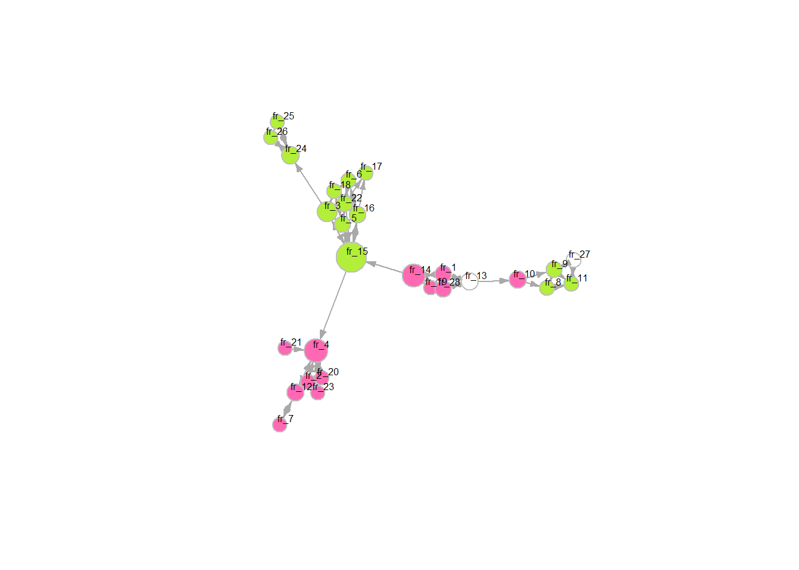
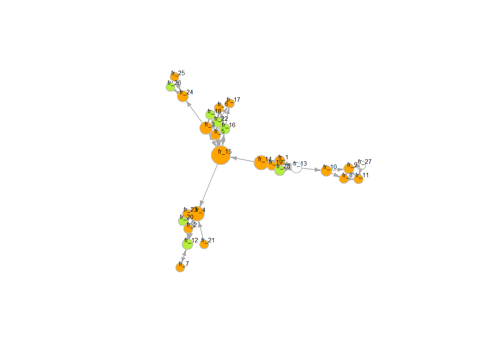
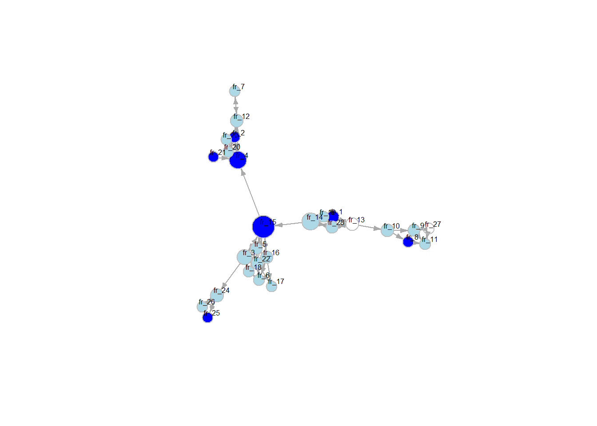
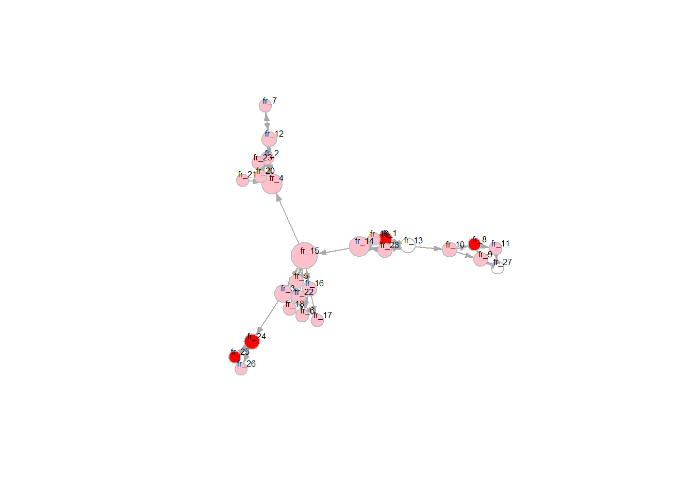
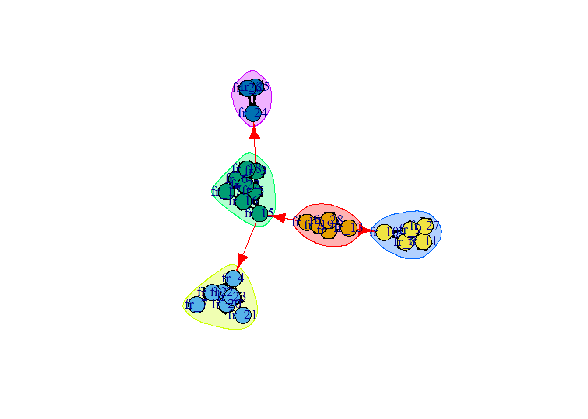

In the workshop we did the following:
Student presentations on network visualization
Working on data preparation own projects
Explanation and coding of behavioral Y
rm(list = ls()) # clean workspace
# custom functions
fpackage.check <- function(packages) {
lapply(packages, FUN = function(x) {
if (!require(x, character.only = TRUE)) {
install.packages(x, dependencies = TRUE)
library(x, character.only = TRUE)
}
})
}
fsave <- function(x, file = NULL, location = "./data/") {
ifelse(!dir.exists("data"), dir.create("data"), FALSE)
ifelse(!dir.exists("data"), dir.create("data"), FALSE)
if (is.null(file))
file = deparse(substitute(x))
datename <- substr(gsub("[:-]", "", Sys.time()), 1, 8)
totalname <- paste(location, datename, file, ".rda", sep = "")
save(x, file = totalname) #need to fix if file is reloaded as input name, not as x.
}
fload <- function(filename) {
load(filename)
get(ls()[ls() != "filename"])
}
fshowdf <- function(x, ...) {
knitr::kable(x, digits = 2, "html", ...) %>%
kableExtra::kable_styling(bootstrap_options = c("striped", "hover")) %>%
kableExtra::scroll_box(width = "100%", height = "300px")
}
packages = c("RSiena", "tidyverse", "stringdist", "stringi")
fpackage.check(packages)## Loading required package: RSiena## Warning: package 'RSiena' was built under R version 4.5.3## Loading required package: tidyverse## Warning: package 'tidyverse' was built under R version 4.5.3## Warning: package 'lubridate' was built under R version 4.5.3## ── Attaching core tidyverse packages ──────────────────────── tidyverse 2.0.0 ──
## ✔ dplyr 1.1.4 ✔ readr 2.1.6
## ✔ forcats 1.0.1 ✔ stringr 1.6.0
## ✔ ggplot2 4.0.0 ✔ tibble 3.3.0
## ✔ lubridate 1.9.5 ✔ tidyr 1.3.1
## ✔ purrr 1.2.0## ── Conflicts ────────────────────────────────────────── tidyverse_conflicts() ──
## ✖ dplyr::filter() masks stats::filter()
## ✖ dplyr::lag() masks stats::lag()
## ℹ Use the conflicted package (<http://conflicted.r-lib.org/>) to force all conflicts to become errors
## Loading required package: stringdist
##
##
## Attaching package: 'stringdist'
##
##
## The following object is masked from 'package:tidyr':
##
## extract
##
##
## Loading required package: stringi## Warning: package 'stringi' was built under R version 4.5.3## [[1]]
## NULL
##
## [[2]]
## NULL
##
## [[3]]
## NULL
##
## [[4]]
## NULLlibrary(haven)
tnss_net <- read_sav("./data/TNSS_wave_2010_mentors.sav")
tnss_pup10 <- read_sav("./data/TNSS_wave_2010_pupils.sav")
tnss_pup11 <- read_sav("./data/TNSS_wave_2011_pupils.sav")
# using 'foreign' I got warnings and didn't seem to load well. 'haven' works nicely
#join datasets
# gaat automatisch goed gelukkig (obv IDClass en IDresp)
tnss <- left_join(tnss_net, tnss_pup10)## Joining with `by = join_by(IDClass, IDresp)`view(tnss)
#selecteer class 5 (of een andere leuke grote klas met weinig missings)
c5 <- tnss %>%
filter(IDClass == 5)
c9 <- tnss %>%
filter(IDClass == 9)
c3 <- tnss %>%
filter(IDClass == 3)
#aantal leerlingen in class 5
max(c5$order) # 28## [1] 28max(c9$order) # 20## [1] 20max(c3$order) # 27## [1] 27#vis het nominatienetwerk er uit. Nu beetje handwerk. Kan vast slimmer.
c5_net <- c5 %>%
select(fr_1:fr_28)
c3_net <- c3 %>%
select(fr_1:fr_28)
view(c5_net)
class(c5_net) # tibble/data frame## [1] "tbl_df" "tbl" "data.frame"view(tnss_pup10)
library(igraph)## Warning: package 'igraph' was built under R version 4.5.3##
## Attaching package: 'igraph'
##
## The following objects are masked from 'package:lubridate':
##
## %--%, union
##
## The following objects are masked from 'package:dplyr':
##
## as_data_frame, groups, union
##
## The following objects are masked from 'package:purrr':
##
## compose, simplify
##
## The following object is masked from 'package:tidyr':
##
## crossing
##
## The following object is masked from 'package:tibble':
##
## as_data_frame
##
## The following objects are masked from 'package:stats':
##
## decompose, spectrum
##
## The following object is masked from 'package:base':
##
## uniong1 <- graph_from_adjacency_matrix(as.matrix(c5_net))
# g2 <- graph_from_adjacency_matrix(as.matrix(c3_net))
colorgender <- ifelse(c5$gender == 1, "hotpink", "olivedrab2")
colorattgen <- ifelse(c5$comfyM == 1 | c5$comfyM == 2, "pink", "red") # rood = minder comfy met meisjes. kan dit ook met een gradient?
coloratteth <- ifelse(c5$comfyEM == 1 | c5$comfyEM == 2, "lightblue", "blue") # donkerblauw = minder comfy met ethnic minorities
# to remove vertex labels: vertex.label = NA,
# COLOR BASED ON GENDER
plot(g1,
vertex.color = ifelse(c5$gender == 1, "hotpink", "olivedrab2"),
vertex.size = betweenness(g1, normalized = T, directed = T) * 60 + 10,
vertex.frame.color = "gray",
vertex.label.color = "black",
vertex.label.family = "Helvetica",
vertex.label.cex = 0.5,
vertex.label.dist = 0.8,
edge.curved = 0,
edge.arrow.size = 0.4) ## Warning in text.default(x0, y0, labels = lbl, col = col, family = fam, font =
## fnt, : font family not found in Windows font database
# plot(g2,
# vertex.color = ifelse(c5$gender == 1, "hotpink", "olivedrab2"),
# vertex.size = betweenness(g1, normalized = T, directed = T) * 60 + 10,
# vertex.frame.color = "gray",
# vertex.label.color = "black",
# vertex.label.family = "Helvetica",
# vertex.label.cex = 0.5,
# vertex.label.dist = 0.8,
# edge.curved = 0,
# edge.arrow.size = 0.4)
# COLOR BASED ON ETHNICITY
plot(g1 ,
vertex.color = ifelse(c5$ethnicity == 1, "orange", "olivedrab2"),
vertex.size = betweenness(g1, normalized = T, directed = T) * 60 + 10,
vertex.frame.color = "gray",
vertex.label.color = "black",
vertex.label.family = "Helvetica",
vertex.label.cex = 0.5,
vertex.label.dist = 0.8,
edge.curved = 0,
edge.arrow.size = 0.4)
# plot(g2 ,
# vertex.color = ifelse(c5$ethnicity == 1, "orange", "olivedrab2"),
# vertex.size = betweenness(g1, normalized = T, directed = T) * 60 + 10,
# vertex.frame.color = "gray",
# vertex.label.color = "black",
# vertex.label.family = "Helvetica",
# vertex.label.cex = 0.5,
# vertex.label.dist = 0.8,
# edge.curved = 0,
# edge.arrow.size = 0.4)
# COLOR BASED ON COMFY WITH ETHNIC MINORITIES
plot(g1,
vertex.color = adjustcolor(coloratteth, alpha.f = 4),
vertex.size = betweenness(g1, normalized = T, directed = T) * 60 + 10,
vertex.frame.color = "gray",
vertex.label.color = "black",
vertex.label.family = "Helvetica",
vertex.label.cex = 0.5,
vertex.label.dist = 0.8,
edge.curved = 0,
edge.arrow.size = 0.4) 
# COLOR BASED ON COMFY WITH GIRLS
plot(g1,
vertex.color = adjustcolor(colorattgen, alpha.f = 4),
vertex.size = betweenness(g1, normalized = T, directed = T) * 60 + 10,
vertex.frame.color = "gray",
vertex.label.color = "black",
vertex.label.family = "Helvetica",
vertex.label.cex = 0.5,
vertex.label.dist = 0.8,
edge.curved = 0,
edge.arrow.size = 0.4) 
# kunnen deze twee gecombineerd worden in één plot?
# clustering
clp1 <- cluster_optimal(g1)
plot(clp1, g1)
# kan ik clusteren obv een ego kenmerk?
?cluster_optimal## starting httpd help server ... done# 5 / 6 aparte groepjes in de klasEr zijn maar een paar studenten die niet oke/comfy zijn met meisjes; meer die niet oke/comfy zijn met etnische minderheden. Tolerantie mbt gender lijkt dus ‘makkelijker’ dan etniciteit. Dus gender als primary outgroup, ethnicity secundary?
In beide klassen: lage density, heel erg losse vriendschappen + aparte groepjes
behy_practice <- tnss_pup10 %>%
dplyr::select("comfyM", "comfyJ", "comfyEM", "comfyNL") %>%
as.matrix()
behy_practice <- sienaDependent(behy_practice, type = c("behavior"))Worden tolerante mensen obv gender ook toleranter obv ethniciteit, door hun vrienden? Ofwel door de kenmerken van hun vrienden (gender), ofwel door de meningen (over etnische minderheden) van hun vrienden?
Attitudes ego over gender minorities
Attitudes ego over ethnic minorities
Gender en etniciteit van ego
Gender en etniciteit van vrienden
Attitudes vrienden over gender minorities
Attitudes vrienden over ethnic minorities